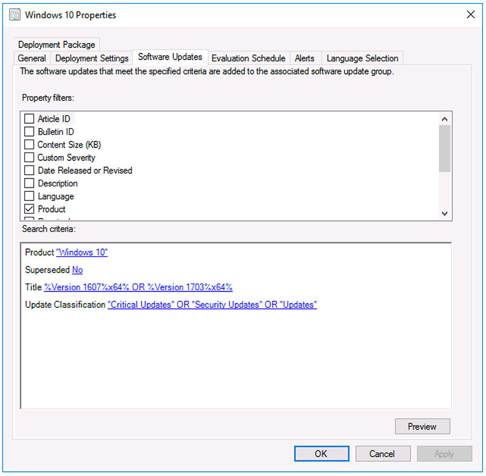

When setting up an automatic deployment rule (ADR) in Microsoft System Center Configuration Manager it is generally a good idea to exclude software updates that aren't relevant to your environment. For example, if you don't have any 32-bit deployments of Windows 10, it seems a waste to download x86 updates. Similarly, if all of your clients are version 1607 or later, why download updates for 1507 or 1511? Fortunately, this is easy to do within the properties of an ADR by filtering on the Title field.
This screen shot shows the filter for only retrieving x64 updates for Windows 10 Version 1607 and 1703.

This configuration yields the following SQL query, which you can run independently to confirm which updates will be downloaded:
SELECT CI.CI_ID, DisplayName
FROM dbo.fn_ListUpdateCIs(1033) CI
JOIN (
SELECT B.CI_ID, SUM(CF.FileSize)/1024 AS ContentSize
FROM v_UpdateInfo B
JOIN vCIAllContents AC ON AC.CI_ID = B.CI_ID
JOIN vSMS_CIContentFiles AS CF ON CF.Content_ID = AC.Content_ID
GROUP BY B.CI_ID) AS CS ON CI.CI_ID = CS.CI_ID
WHERE IsExpired = 0
and (IsSuperseded=0)
and (DisplayName like N'%%Version 1607%x64%%' or DisplayName like N'%%Version 1703%x64%%')
and (CI.CI_ID in (
SELECT CI_ID FROM v_CICategories_All
WHERE CategoryInstance_UniqueID in (N'Product:a3c2375d-0c8a-42f9-bce0-28333e198407')
))
and (CI.CI_ID in (
SELECT CI_ID
FROM v_CICategories_All
WHERE CategoryInstance_UniqueID in (N'UpdateClassification:e6cf1350-c01b-414d-a61f-263d14d133b4', N'UpdateClassification:0fa1201d-4330-4fa8-8ae9-b877473b6441', N'UpdateClassification:cd5ffd1e-e932-4e3a-bf74-18bf0b1bbd83')
)
)